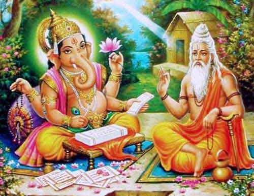

🔥 The Mahabharata: Saga of Destiny, Dharma & Destruction 🔥
The greatest epic of all time, revealing the battle between Dharma and Adharma.
📜 Introduction: The Birth of an Epic
The Mahabharata is one of the greatest epics in human history. It was composed by Sage Vyasa, who sought to document the events surrounding the great Kurukshetra War and its deeper philosophical meanings.
🔍 How It Started
According to legend, Vyasa dictated the entire epic to Lord Ganesha, who agreed to write it down on one condition: Vyasa had to keep reciting without pause. As the tale unfolded, Ganesha, in his eagerness, broke one of his tusks and used it as a pen to ensure the story was recorded without interruption.
❓ Why Was It Written?
The Mahabharata was written to serve as a spiritual and moral guide for future generations. It is a reflection of the eternal struggle between Dharma (righteousness) and Adharma (unrighteousness). Through its characters, dilemmas, and teachings, it conveys lessons about duty, honor, destiny, and the consequences of human choices.
📍 Where & When Did It Happen?
The events of the Mahabharata took place in ancient India, mainly in the kingdom of Hastinapura, which was the seat of power for the Kuru dynasty. Historians suggest that the Kurukshetra War occurred around 3000 BCE, though its exact timeline remains debated.

🌟 What Was Its Purpose?
At its core, the Mahabharata is more than just a story of kings and battles—it is a mirror of life itself. It illustrates that even the greatest heroes have flaws, and the most feared villains have motivations.
The war of Kurukshetra was not just a fight for a throne but a test of values, duty, sacrifice, and divine intervention. The teachings of Krishna in the Bhagavad Gita, a part of this grand epic, continue to be revered as one of the greatest spiritual discourses ever given.

🔥 The Journey Begins!
This introduction serves as the foundation for our journey into the Mahabharata. It sets the stage for the incredible events that follow, exploring the rise of the Kuru dynasty, the rivalries that shaped destinies, and the ultimate war that changed the course of history.
Let us now step into the story of destiny, Dharma, and destruction! 🚀